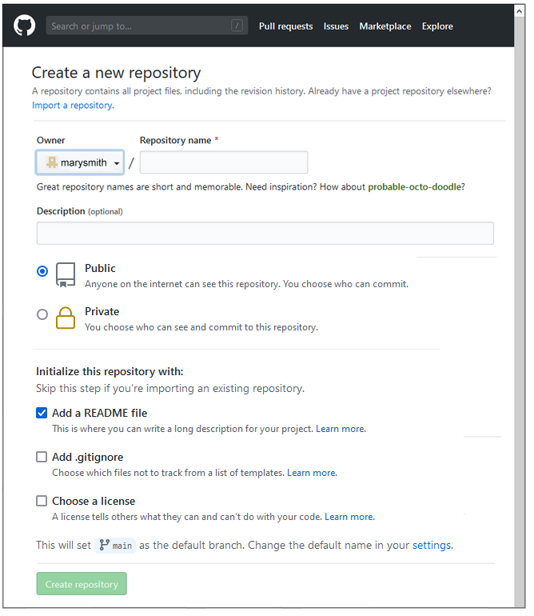
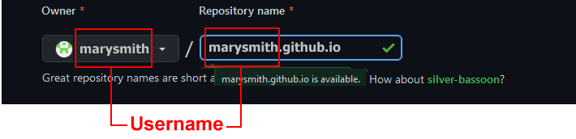
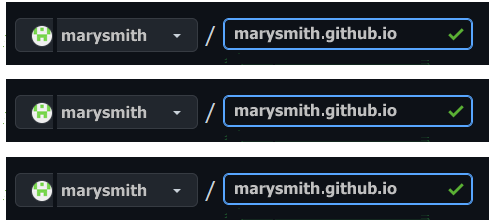
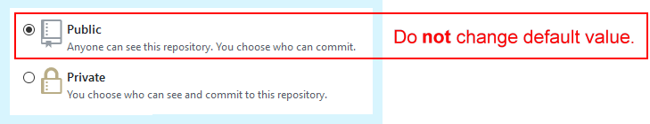
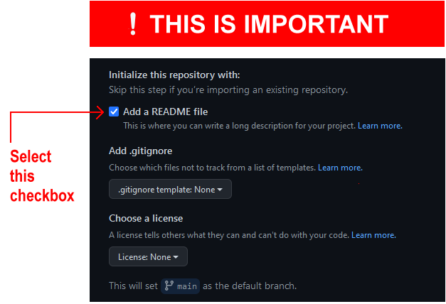
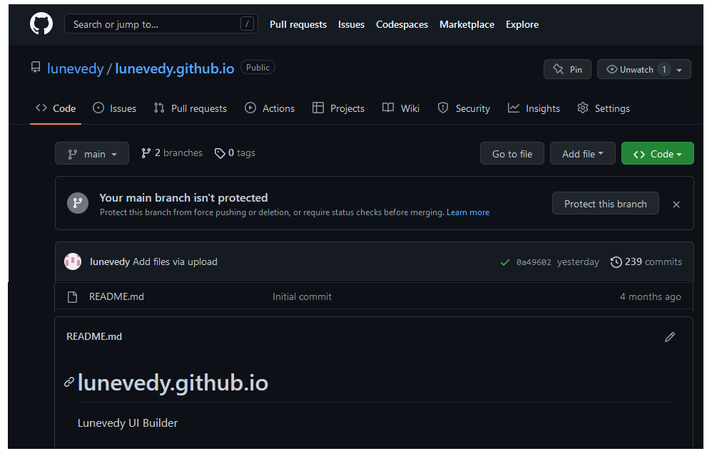
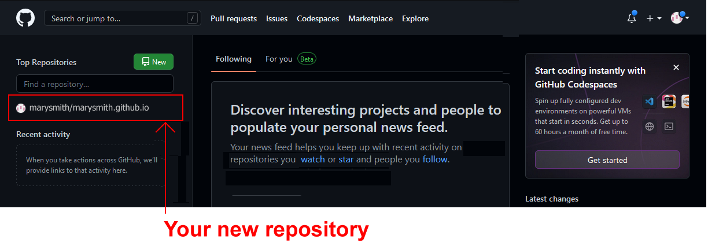
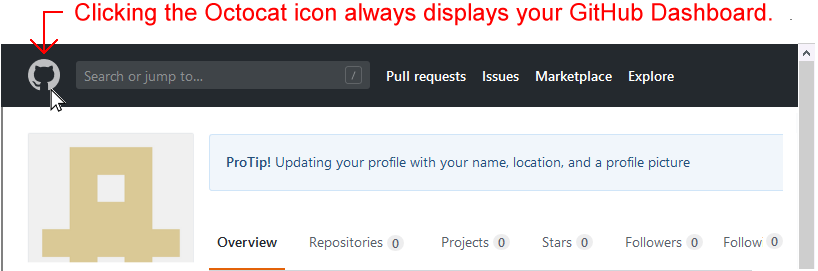
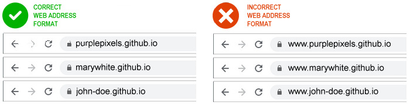

Learning Goals
At the end of this Tutorial you will be able to:
- Create a free account on the GitHub website.
- Choose a username that will be the first part of your website address.
- Create a project location (called a repository or ‘repo’) on GitHub for hosting your website.
- Create a web page directly on GitHub and display it in your web browser.
Your GitHub account: Email and Password
Follow these steps to begin creating your free account on Github.
- Use your web browser to go to this web address: https://github.com

- At the right of the GitHub home page, you can see the three fields (‘boxes’) you need to complete: Username, Email and Password. For the moment, ignore the Username field.
- In the second and third fields:
- Enter your Email address and
- Choose and enter a Password.

After you enter your Email and Password, one more sign-up step remains: you need to enter a Username for your GitHub account.
About your GitHub Username
Your choice of Username for your GitHub account is important for the following reasons:
- Your Username will be the first part of your web address. See some examples below. The remainder of your GitHub web address will always be .github.io.

- You will want to promote your website to others by including your web address in emails, on Linkedin and social media platforms, and on perhaps on your curriculum vitae and business cards. So choose a Username that others will find easy-to-remember.
- Typically, you will choose a Username that is similar to your personal or organisation name.
- Enter your Username in lower-case letters, and without any spaces. Do not use the underline (_) character.
- Some people and organisations use the hyphen character (-) to separate words in their chosen Username. For example, mary-smith or purple-pixels. Others do not. For example, marysmith or purplepixels. It’s up to you.
- GitHub provides just one GitHub web address for each account. If you want to create several GitHub accounts, you will need to use a different email address for each one.
- The Username you choose need not be the same as your email address. For example, you could create a Username of marygreen with the email of marywhite@gmail.com.
- You can change your GitHub Username later if you wish.
Your GitHub account: Username
After choosing a username for your GitHub account, your next step is to enter it.
- In the Username field on the right of the GitHub home page, enter your chosen Username.
If another GitHub account has already taken your entered Username, you will see a message similar to that below.

- When you have entered a Username that GitHub accepts, click the Sign up for GitHub button.

- You are now shown a new screen, named Join GitHub. You may be asked to complete an ‘I am a real person’ puzzle.
 Click the Verify button to begin the puzzle.
Click the Verify button to begin the puzzle.

- When finished, scroll down the screen and click the button named Next: select a plan.

- GitHub now shows you a new screen, named Choose a plan. This screen offers you two sets of choices:
- Individual or Team membership, and
- Free or Pro (paid) membership
At the top of this screen, you can see that the Individual plan is selected by default. You do not need to change this.
 Lower down the screen, GitHub offers you a second set of choices – Free or Pro. Select the Choose free option.
Lower down the screen, GitHub offers you a second set of choices – Free or Pro. Select the Choose free option.

- GitHub now displays a 'Welcome' screen with a series of user feedback questions.
 You can ignore these questions if you wish.
At the bottom of this 'Welcome' screen, click the button named Complete setup.
You can ignore these questions if you wish.
At the bottom of this 'Welcome' screen, click the button named Complete setup.

That’s it. You have now created your account on GitHub. Well done,
But you have two more steps to complete before you can use your GitHub account to host your web pages:
- You need to verify your email address, and
- You need to create a so-called ‘repository’ on GitHub that has the same name as the web address of your website on GitHub.
For example, if your GitHub username is marysmith, you need to create a repository with the name marysmith.github.io to store your web pages.
Verify your email address to GitHub
Before you can perform any actions on GitHub, such as creating or uploading files, you need to confirm your email address. GitHub sends a confirmation message to the email address you entered when you created your GitHub account.
Open the email and click the Verify email address button.

Using GitHub to host your web pages
To host web pages on your GitHub account, you need to create what is called a ‘repository’ with the same Repository Name as your GitHub web address.
Repositories on GitHub are commonly referred to as ‘repos’.
Follow the steps below to set up this repository.
- If you are not signed in to your GitHub account, sign in now.
- If your Github Dashboard screen is not currently displayed, click the Octocat icon at the top-left of the screen to display it.
 TIP: If even you find yourself ‘lost’ when using the various GitHub screens, clicking the Octocat icon always brings you back to your GitHub Dashboard.
TIP: If even you find yourself ‘lost’ when using the various GitHub screens, clicking the Octocat icon always brings you back to your GitHub Dashboard.
- Your GitHub Dashboard offers two ways to create a new repository. Choose one.

- Near the top-left of the screen, click the New button. Or...
- Near the centre of the screen, click the Start a project button.
- GitHub now displays the Create a new repository screen. You can see an example below.

Notice that your chosen GitHub Username is displayed in the Owner field.

- At the right of the Owner field, in the field called Repository name, enter your chosen Username, followed by .github.io.
You must enter these EXACTLY. Here is one example.

And here are some more examples.

- Next, enter some text in the Description field, as shown in the example below.

- Accept the default value of Public so that others will be able to view your web pages.

- Select the Initialize this repository with a README checkbox below.

This will display your entered Description as ‘placeholder’ text on your GitHub website in a file named README.md. It also simplifies the remaining steps in creating your new repository.
- Finally, click the Create repository button at the bottom of the screen.

GitHub now displays details of the repository you have created. See the example below.

If you click the GitHub ‘Octocat’ logo at the top-left of the repository details screen, you are returned to your GitHub Dashboard.
There you can see your new repository listed in the column on the left. Clicking the repository name will bring you to the screen containing details of that repository.

To verify that your GitHub account is working correctly:
- Open a new tab or window in your web browser.
- In the web address bar, enter the address of your GitHub website – such as marysmith.github.io.
You should now see a web page similar to the following.

Note that updates to GitHub do not always happen instantly. It may take several minutes for a new web page to appear or an existing one to update.
Creating a test web page on your website
To create a test web page for your GitHub website, follow these steps.
- Display your GitHub Dashboard. If some other GitHub screen is currently displayed, click the Octocat icon at the top-left of the screen to view your GitHub Dashboard.

- At the left of your GitHub Dashboard you will see a list of all the repositories you have created on your GitHub account.
Currently, because you have created only a single repository, the only one you will see will have a name in this format:
username/username.github.io
Over time, as you create more repos, the list you see at the left of your GitHub Dashboard will grow. But, if you want a GitHub account to host web pages, there must always be one repository with a name exactly the same as the GitHub username. See the examples below.
- abcdesign/abcdesign.github.io
- seankelly/seankelly.github.io
- mary-pixel/mary-pixel.github.io
- Click the username/username.github.io repository.
GitHub now shows a screen with details of that repository.
- Near the right of this screen, you can see a button named Add file. Click on it.

- From the dropdown list displayed, choose the option Create new file.

- On the next screen displayed, enter index.html as the name of your new file.

- For the content of the file, enter Hello, world.

- Next, enter a so-called commit message for your action of creating a new file. For example:
Create home web page for personal website.

- Finally, at the bottom of the screen, click the green button named Commit new file.
On GitHub, the word ‘Commit’ has a similar meaning to the ‘Save’ in regular software applications such as Microsoft PowerPoint or Adobe Photoshop.
That’s it. All done.
To verify that your web page displays correctly:
- Open a new tab or window in your web browser.
- In the web address bar, enter the address of your GitHub website. For example:
marysmith.github.io.
After a short delay, you should see a web page similar to the following.

In practice, you would rarely create a web page or other file directly on GitHub. Instead, you would first create and test your files on your local computer, and then upload them to your GitHub account.
Note that there is no 'www' at the beginning of a GitHub web address. See the examples below.

Return to Contents.